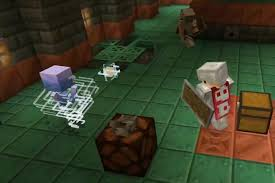
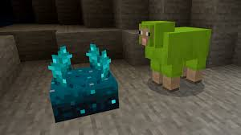

 Minecraft (від англ. mine craft — досл. «шахтарське ремесло») — відеогра від незалежної студії Mojang 2011 року жанру «пісочниця» у відкритому світі з виглядом від першої/третьої особи. Гра започаткувала однойменну серію, для всіх творів якої характерний мінімалістичний кубічний дизайн. Ця гра передусім дає змогу виразити свою креативність. Розроблена шведським програмістом Маркусом Перссоном, відомим також як «Notch», і надалі випускається заснованою Маркусом Перссоном компанією Mojang, котра належить Microsoft Studios. Minecraft належить до ігор з найширшою аудиторією і визнана найпродаванішою відеогрою в історії[4].
 Minecraft дає в розпорядження гравцеві тривимірний процедурно генерований світ, що складається з кубічних блоків, які можливо використовувати на свій розсуд. Блоки поділяються на матеріали та об'єкти, котрі не обов'язково мають видиму кубічну форму, але займають умовний один кубик. Гра не ставить перед гравцем однозначних цілей, але пропонує безліч можливостей і занять: досліджувати світ, створювати різноманітні споруди й предмети, битися з різними супротивниками. Можлива як одноосібна гра, так і багатокористувацька, коли багато гравців взаємодіють в межах одного світу